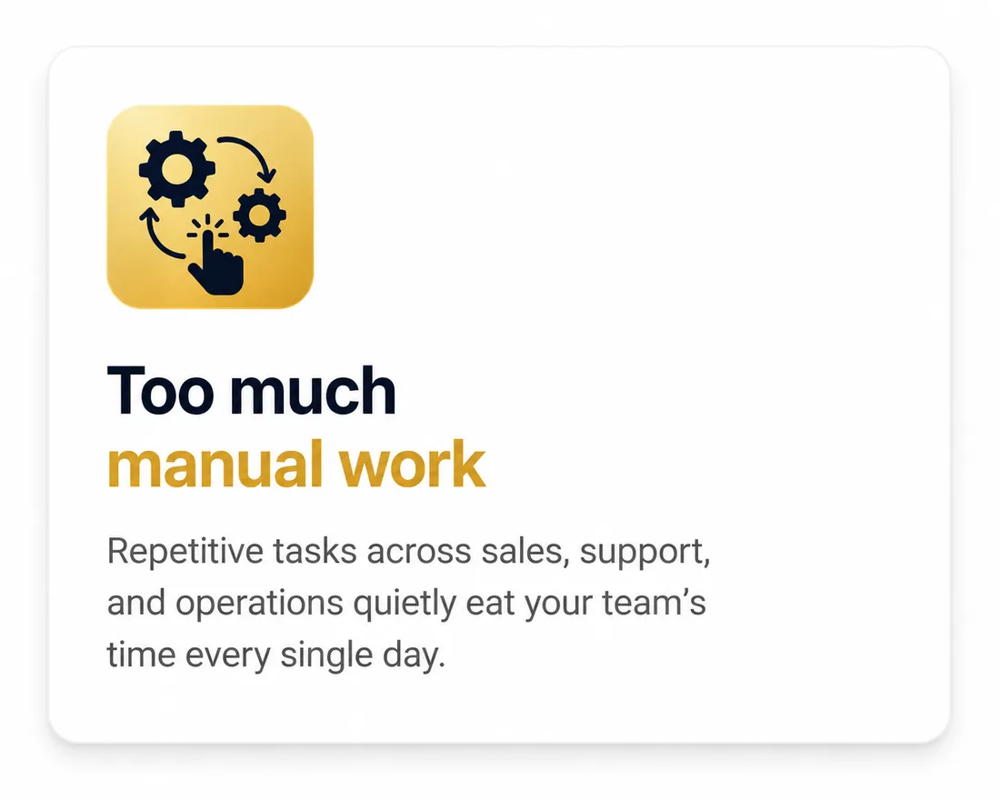
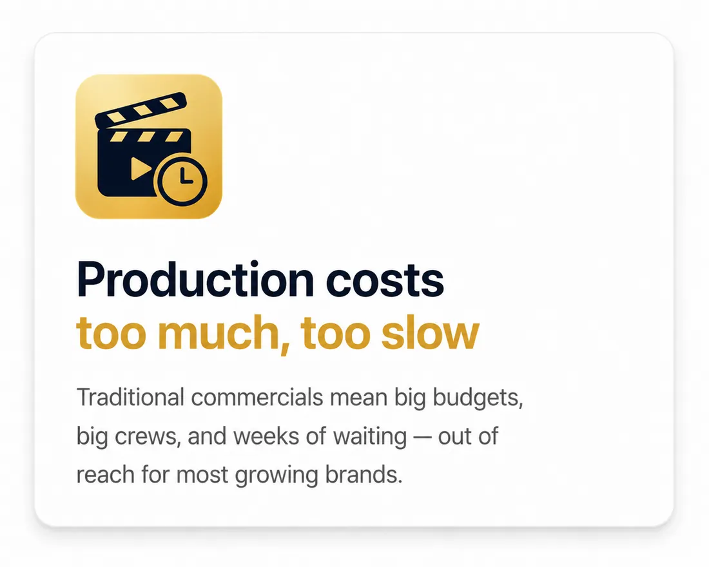
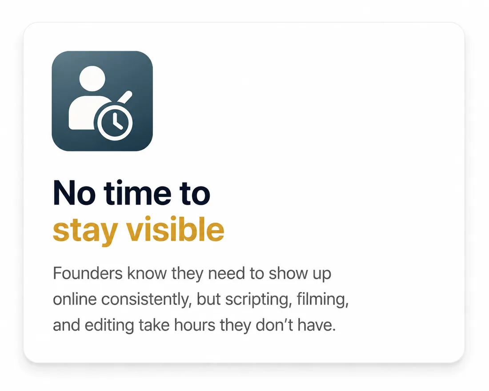
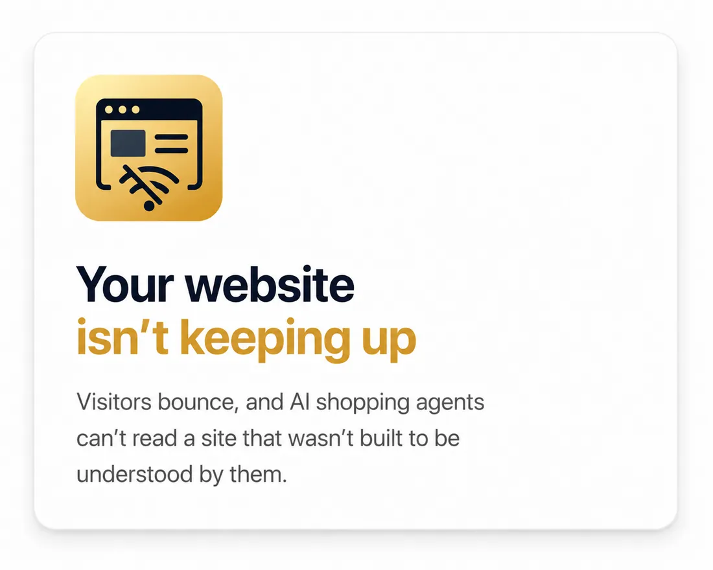

Founder's Message
Founder & CEO
NH Saiem
You don't need seven AI tools and no time to run them. You need one system that actually works while you sleep. That's the only thing we build.
NH Saiem, Founder & CEO
AI Agency
Start with the one that's costing you most. Add the rest as you grow. It's all one system, not seven subscriptions.
Meet the Founder
Book a free 30-min call and I'll walk you through exactly how AI can scale your business.
Built on the tools your business already trusts
The problem
None of this feels like a crisis on any single day. It just quietly leaks revenue, week after week, while you're with a client.




Services
Service 01
Autonomous agents wired into the work you already do: routing, replying, reconciling. We map the workflow, then let it run itself. That includes AI receptionists that answer every call, website and WhatsApp chatbots that book appointments, and AI automations that follow up on every lead.
Service 02
Studio-quality ads and commercials, produced with AI at a fraction of the traditional cost, and in days rather than weeks. From script and storyboard to voiceover and final edit, we deliver AI video ads and product commercials ready for Instagram, TikTok and YouTube.
Service 03
Content is the new currency. We help founders show up online consistently, in your face and your cloned voice, without spending hours on camera. Send us a topic or script, and we turn it into ready-to-post AI avatar videos for business on LinkedIn, Instagram and YouTube.
Service 04
A website built to convert, and built for the AI agents your customers now shop with, so your products stay readable as search changes. We handle website design for small businesses: fast, mobile-friendly, and structured so Google and AI assistants can find and recommend you.
Why us
Same business, same team, same phone number. Different amount of it slipping through the cracks.
The Old Way
CERO Studio
How it works
You don't need to understand the tech. You need to know what changes on Monday morning. That's what we walk you through.
30 minutes to find where leads slip through and what it's actually costing you. No pressure, no pitch.
We map what to automate first based on payback, not what's flashy, and hand you the plan in writing.
We build it and connect it to your calendar, phone and CRM. Live in 2–4 weeks for the first system.
We go live with you, watch the first real calls closely, and tune it until it sounds right.
Once the first system pays for itself, we add the next: more channels, more locations, less manual work.
Our work
The systems we build, and the creative work we produce — see it all in our portfolio.
Founder's Message
Founder & CEO
You don't need seven AI tools and no time to run them. You need one system that actually works while you sleep. That's the only thing we build.
NH Saiem, Founder & CEO
Co-founder's Message
Co-founder & COO
Most agencies sell you a tool and disappear. We stay in the system, watching what breaks, fixing it before you notice, and making sure it actually runs your business, not just sits there.
Zihadul Islam, Co-founder & COO
FAQ
We're an AI studio that covers four things: AI agents that answer every enquiry across calls, chat, and messages; studio-quality AI video for ads and commercials; an AI avatar of you for content you don't have to film; and websites built to convert both human visitors and AI shopping agents. Most clients start with the one costing them the most, then add the rest as it pays for itself.
None. We build and run everything. You approve how it sounds, looks, and reads. If you can describe how your business currently handles calls, content, or your website, you can brief us. Everything we hand over is documented in plain language, with no dashboard you're obliged to learn.
It depends on the service. An AI agent or reminder sequence is typically live in 2–4 weeks from kickoff; a commercial or avatar video usually turns around in days once we have your brief and assets; a website build runs 3–6 weeks depending on scope. Multi-service builds are staged so the first piece is earning while we build the next.
About 30 minutes, no pitch deck. We map where you're losing time or visibility: missed enquiries, outdated content, an underperforming site. Then we estimate what that's costing you monthly, and tell you which one or two things to fix first. You get that summary in writing afterwards, yours to keep, whether you work with us or not.
Any business where missed enquiries, outdated content, or a slow website costs real money. That covers appointment-led local businesses and product or e-commerce brands that need ongoing ad and content production. If growth depends on people reaching you, seeing you, or buying from you, we can help.
It depends on the service. AI agents and automation are a one-off build fee plus a monthly fee for hosting, usage, and ongoing tweaks. Video production is typically priced per project or as a monthly content retainer. Websites are a one-off build fee with an optional maintenance plan. We quote everything in full after the call. No long lock-in, month-to-month once you're live.
Let's talk
Whether it's a call, a message, or a customer scrolling past your competitor's ad instead of yours. We fix that. Book a free strategy call, 30 minutes, no obligation, and you keep the plan either way.